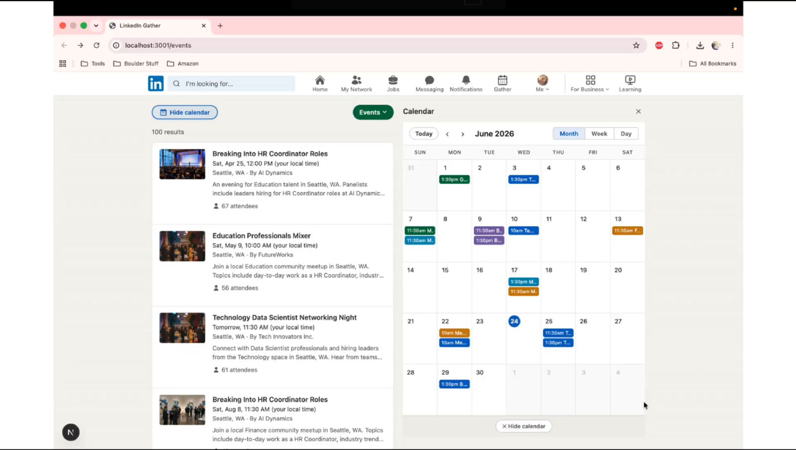
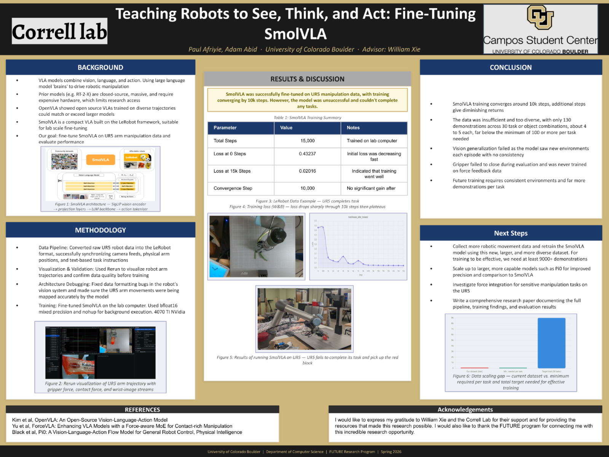
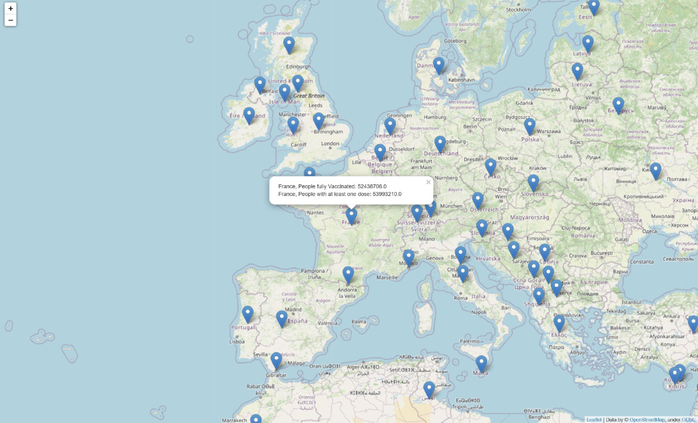

Projects
LinkedIn Gather 2nd Place

A reimagined events experience built in under 48 hours for the LinkedIn Possibilities in Tech Hackathon, where my team took second place. Gather helps Gen Z and young professionals get past career anxiety and build genuine, less transactional relationships by meeting through shared real-life events. It has a personalized event feed, a calendar for managing schedules, and networking filters that surface mutual attendee overlap. We also used the Google Gemini API to power nudge chats, which suggest talking points to help start a real conversation before and after an event.
View on GitHubFine-Tuning SmolVLA

Undergraduate research in the Correll Lab through CU Boulder’s FUTURE program, where Adam Abid and I fine-tuned SmolVLA, a compact open source vision language action model built on the LeRobot framework, to control a UR5 robot arm. I built the data pipeline that converted raw UR5 recordings into the LeRobot format, syncing the camera feeds, arm positions, and task instructions. Training converged by 10,000 steps with loss dropping from 0.43 to 0.02, but the model never completed a task. We traced that back to having only 130 demonstrations, inconsistent environments, and no force feedback data for the gripper.
View the research poster{kind=link}
Worldwide Covid-19 Vaccination Map

One of my first projects. I pulled a Covid-19 dataset from Kaggle and used it to build an interactive world map, where every country gets a marker you can click to see how many people were fully vaccinated and how many had at least one dose. Working through all the CSV files behind it gave me a lot of hands-on experience with pandas, and the finished map is included in this repo.
View on GitHub Open the map